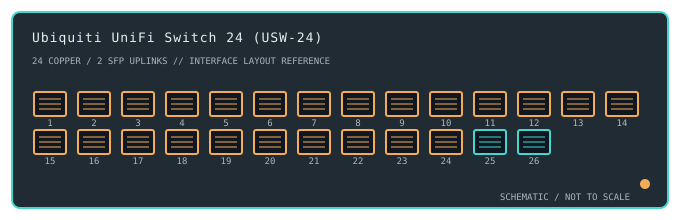

[ MODEL-SPECIFIC NETWORK HARDWARE ]
Ubiquiti UniFi Switch 24 (USW-24)
A rack-mount UniFi-managed Layer 2 switch with 24 Gigabit RJ-45 ports and two 1GbE SFP uplinks; this is the non-PoE USW-24.

IDENTIFICATION: Confirm the complete product label and hardware revision before applying power, firmware or transceiver assumptions. Link and fabric rates below are nominal vendor specifications, not test results.
Detailed specifications and compatibility
| Subcategory | Managed switches |
|---|---|
| Exact product and model | Ubiquiti UniFi Switch 24 (USW-24) |
| Ports / physical interface | 24 × 10/100/1000BASE-T RJ-45 ports plus 2 × 1GbE SFP uplink ports. The SFP cages are not SFP+ 10GbE ports. |
| Bus and host connection | 1U rack-mount switch appliance; Ethernet peers connect over RJ-45 or compatible 1GbE SFP modules. It is not an expansion card and uses no host OS NIC driver. |
| Nominal switching performance | 52Gb/s aggregate switching capacity and 38.69Mpps forwarding rate in the product specifications; neither value is a measured payload benchmark. |
| Power over Ethernet | No PoE output on USW-24. The USW-24-PoE and Pro variants are separate products with different port power and uplink capabilities. |
| Management and software | Managed by the UniFi Network application/controller for VLANs, spanning tree, link aggregation and monitoring. Controller availability and feature support depend on the installed Network release. |
| Power and physical form | Internal AC power supply, desktop/rack ears, and fan-cooled 1U enclosure. Use the correct regional mains cable and preserve ventilation clearance. |
| Compatibility | Gigabit endpoints use standard copper Ethernet; fiber uplinks require 1GbE SFP modules, matching optics at both ends and compatible fiber. A supported UniFi Network controller is needed for centralized configuration; forwarding remains Ethernet-based. |
| Variant identification | USW-24 is a 24-copper-port non-PoE model with two 1GbE SFP uplinks; do not apply USW-24-PoE or USW-Pro-24 specifications to this exact product. |
| Measured throughput | No physical sample was benchmarked for this record. Nominal line rate and switching-fabric ratings are not measured application throughput. |
Revision-specific use notes
USW-24 is a 24-copper-port non-PoE model with two 1GbE SFP uplinks; do not apply USW-24-PoE or USW-Pro-24 specifications to this exact product.
Gigabit endpoints use standard copper Ethernet; fiber uplinks require 1GbE SFP modules, matching optics at both ends and compatible fiber. A supported UniFi Network controller is needed for centralized configuration; forwarding remains Ethernet-based.
Managed by the UniFi Network application/controller for VLANs, spanning tree, link aggregation and monitoring. Controller availability and feature support depend on the installed Network release.
Archival, ESD and preservation notes
Record the full SKU and hardware revision, serial/date code, firmware release, supply label, installed transceiver identifiers and physical port test results. Keep configuration backups free of credentials and private network details.
Disconnect mains and attached PoE loads before service. Keep optics capped and store transceivers separately with their wavelength, fiber mode and part number recorded.
Manufacturer sources
- Ubiquiti USW-24 technical specificationsManufacturer product or model-specific technical documentation. Verify the exact SKU, hardware revision, region and firmware.
- Ubiquiti USW-24 product pageManufacturer product or model-specific technical documentation. Verify the exact SKU, hardware revision, region and firmware.
Confirm the source's revision/region applicability against the item label. Manufacturer link rates and capacity ratings are not measurements of application-level throughput.